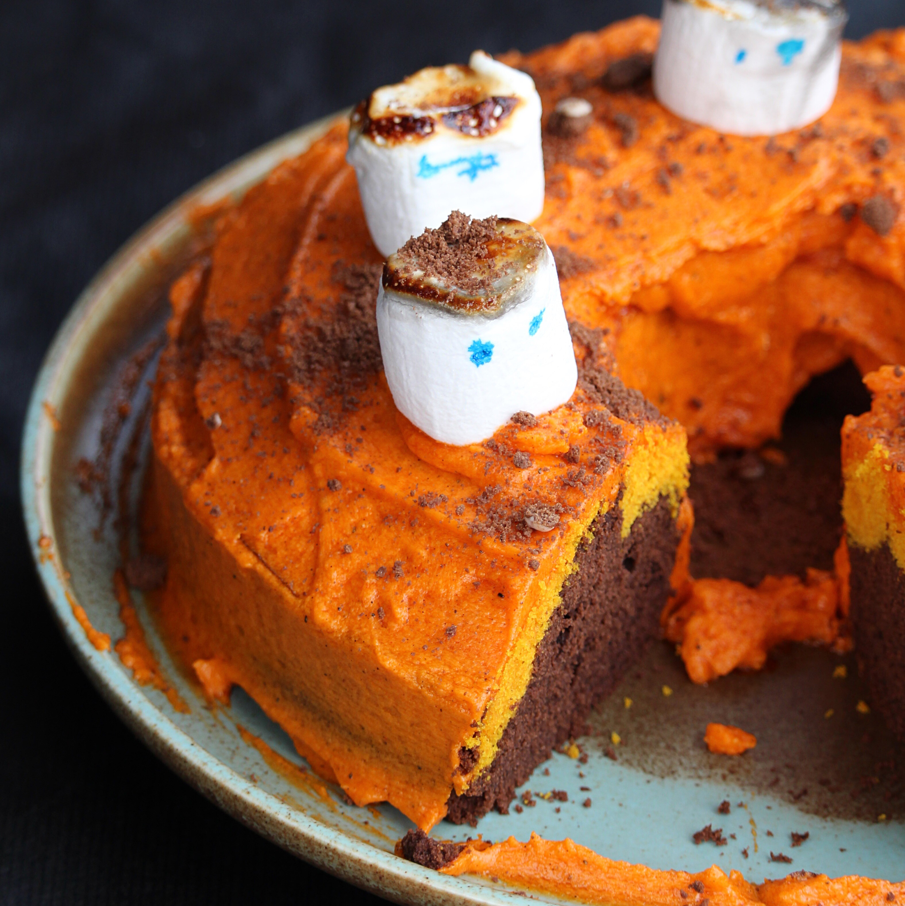

Bundt Cake

Halloween Buttermilk Bundt® Cake
A dense, moist Bundt® cake colored for Halloween. This cake can easily be converted to a gluten-free version simply by exchanging the wheat flour with your favorite cup-to-cup gluten-free flour.
Ingredients
- 2 tablespoons butter, or as needed
- 2 ¼ cups cake flour
- 1 cup white sugar
- 2 teaspoons baking powder
- 1 cup buttermilk, at room temperature
- ¾ cup butter, at room temperature
- 3 eggs, at room temperature
- 1 teaspoon vanilla extract
- 2 teaspoons orange food coloring powder
- ½ cup cocoa powder
- 1 teaspoon black food coloring powder
Steps
- Step 1
Preheat the oven to 350 degrees F (175 degrees C). Grease a fluted tube pan (such as Bundt®) with 2 tablespoons butter.
- Step 2
Mix flour, sugar, and baking powder in a large bowl. Beat in buttermilk using an electric mixer. Add 3/4 cup butter and beat until fully incorporated. Mix in eggs and vanilla extract until smooth.
- Step 3
Pour 1/3 of the batter into a small bowl; mix in orange food coloring. Add cocoa powder and black food coloring to the large bowl. Mix well, scraping down the sides.
- Step 4
Pour black batter into the cake pan. Pour orange batter on top. Rap pan against the counter to release any air bubbles.
- Step 5
Bake in the preheated oven until a toothpick inserted into the center comes out clean, about 50 minutes. Cool for 15 minutes before removing from the pan.